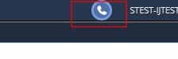

Audio/Video/Chat¶
When students and teachers/instructors are both accessing the same assignment, a Call button will show allowing Audio/Video calls and or real time chat.

Also supported in projects (from My Projects area) where permissions have been granted by the project owner to other Codio users.
Permissions¶
Permission for your camera/microphone is required and your browser will prompt you to allow.Permission
If permission has been denied, you can re enable in your browser
Google Chrome:¶
If you are using Google Chrome you can access your settings through the padlock icon in the top left of your screen, next to the URL of the page you are currently on.
Click Site settings and make sure your camera and microphone both say Allow
Firefox:¶
If you are using Firefox as your internet browser you can access your settings by typing “about:permissions” into the location bar as if it were a website and hitting enter.
This will take you to your settings page, click the following link to find out more about changing your settings:
Safari:¶
If you are using Safari, you can access your browser settings by clicking Safari and then Preferences.
You will see a pop up box and can update your settings. Learn more about how to update the settings through the following link:
https://support.apple.com/en-nz/guide/safari/ibrwe2159f50/mac